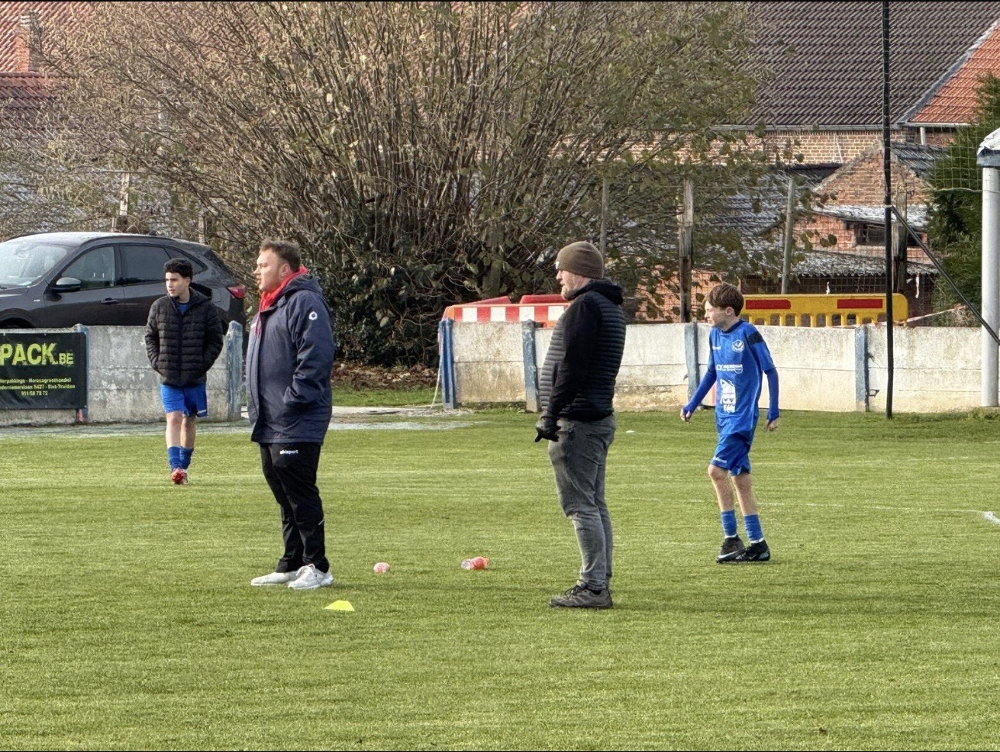
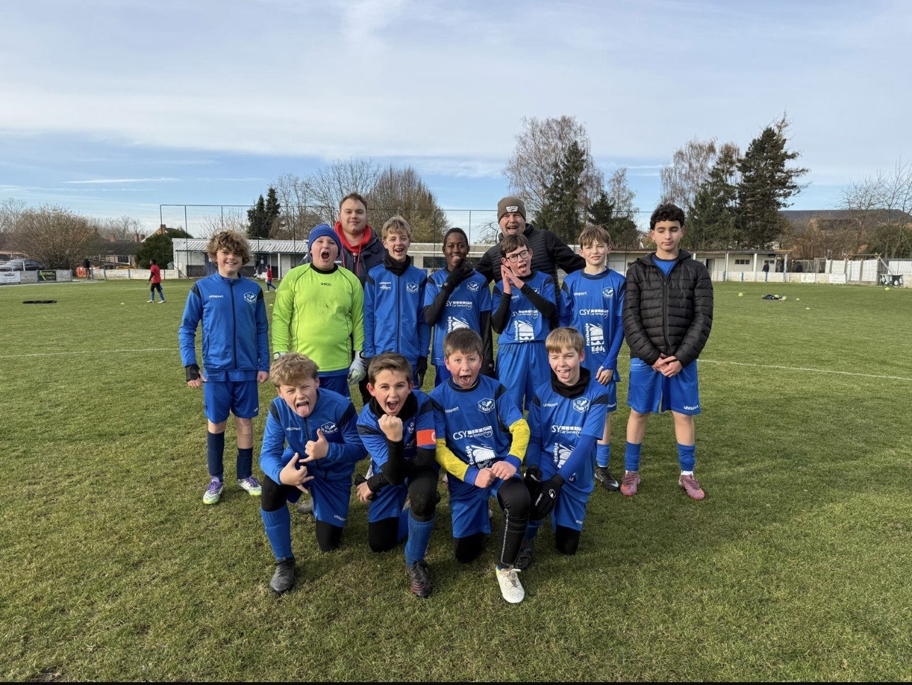
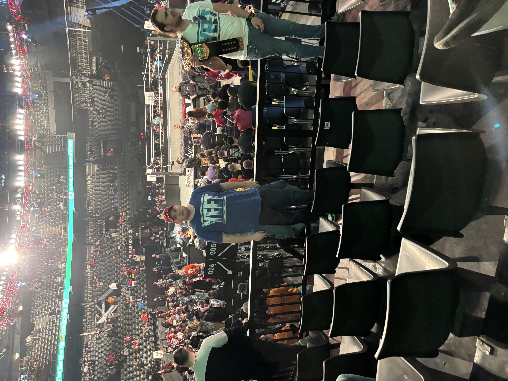
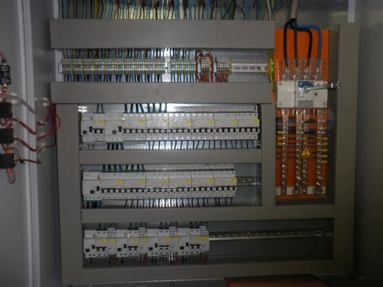
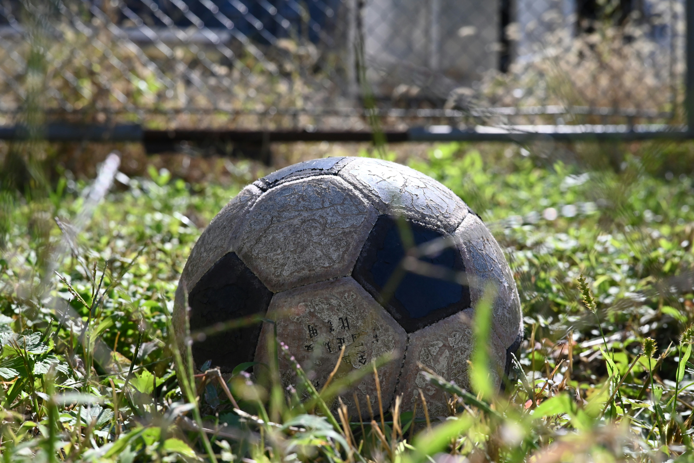

Hallo Ik ben Tibo
Student digitale vormgeving
Focus op webdevelopment & design

Student digitale vormgeving
Focus op webdevelopment & design

Elektrotechnieken Secondair onderwijs
Initator C Voetbal

Ik koos deze opleiding omdat ik web designer te worden maar door het eerste semester werd mij duidelijk dat ik liever Web developer ben

Ik kan uren praten over films, series en WWE, omdat verhalen en entertainment mij echt raken. Mijn rustmomenten vind ik in films kijken en stand-up comedy, waarbij lachen en ontspannen centraal staan. Ik heb geleerd om rustig te blijven in het leven en droom ervan om ooit naar Amerika te verhuizen.
de opdracht was om een industrieel kast op te kuisen en opnieuw mooi te bedraden en oudere componenten te vervangen

een take-away website maken met de nodige functie en zorgen voor mooi duidelijke lay-out

een toernooi organiseren is om deelnemers op een leuke en eerlijke manier met elkaar te laten strijden. Daarnaast bevordert het sociale contacten, sportiviteit en samenwerking. Tot slot zorgt een toernooi voor spanning, plezier en het ontdekken van talent.
